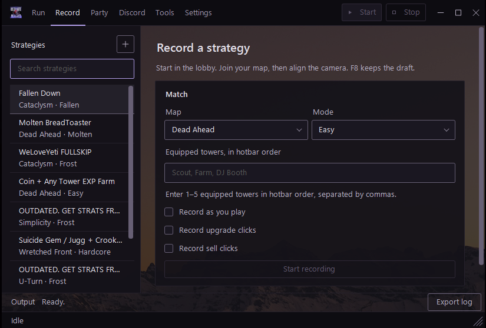

Record a strategy.
Choose a map, mode and equipped towers, then select which actions to capture.

Ultimate Macro · Tower Defense Simulator
A free Windows macro for Tower Defense Simulator. Record your placements, upgrades and abilities, then replay the strategy.

Choose a map, mode and equipped towers, then select which actions to capture.

Download the release and extract the whole folder before opening the app.
Yes. Public releases are free and open source.
Windows 10 or 11, AutoHotkey v2 and the required display, Roblox and OCR settings. See the setup guide.
Some runs support restarts and reconnection, but screen detection can fail. Test your loadout and watch a full match before leaving it running.
Browse the built-in strategy library or import a compatible .strat file in the app.